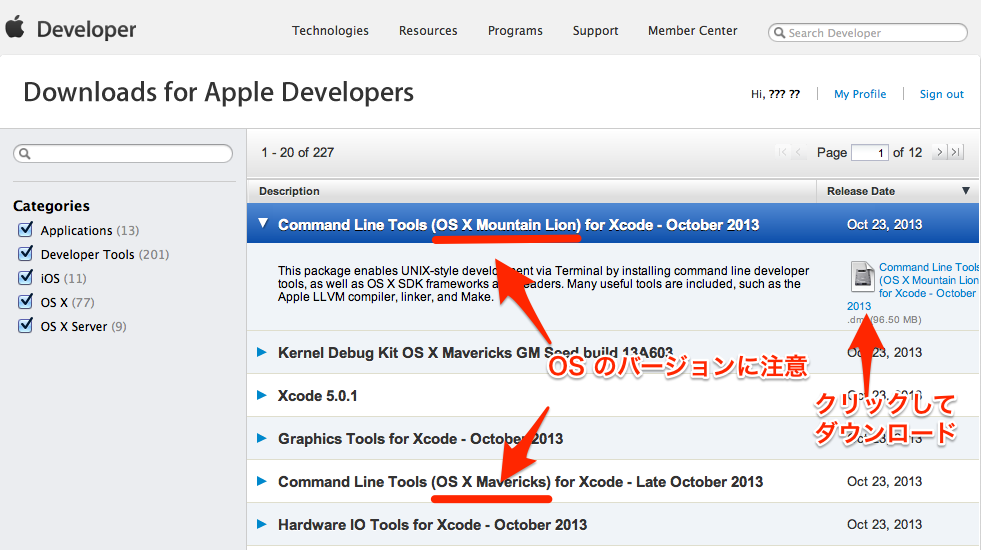

ITL/Homebrew によるパッケージ管理
目次
1 概要
homebrew は研究環境に必要な様々な UNIX ツールをまとめて管理(インストール， ライブラリ依存関係のチェック，アンインストールなど)してくれるパッケージ管理システ ムである．
homebrew は同様の Mac 用パッケージ管理システムである macport に比べてインストール にかかる負荷が軽い．これは homebrew では「Mac OS X に標準でついてくるものまでわざ わざインストールしない」という方針が採用されているためである．
2 インストール
2.2 Command Line Tools for Xcode のインストール
- 事前に Apple ID の登録が必要．
- https://developer.apple.com/downloads/index.action にアクセス．Apple ID での Sign in を求められる．
- Command Line Tools (OS X Mavericks) for Xcode の最新版をクリックし，dmg ファイル(下図参照)をクリックしてダウンロード
- Mountain Lion の場合：
Command Line Tools (OS X Mountain Lion) for Xcode の最新版をクリックし，dmg ファイル(下図参照)をクリックしてダウンロード 
- Mountain Lion の場合：
- Download された dmg ファイルをマウントし，仮想ドライブ内の Command Line Tools (OS X 10.x).mpkg をダブルクリック
2.3 Homebrew のインストール
- 本体のダウンロード．ターミナルから以下を実行：
ruby -e "$(curl -fsSL https://raw.github.com/mxcl/homebrew/go/install)"
ダウンロードが始まる．
- 診断する．ターミナルから以下を実行：
brew doctor
Your system is ready to brewと表示されれば OK. ~/.bash_profile(無ければ新たに作成し)に以下を追記：export PATH=/usr/local/bin:$PATH
上記を実行する方法は2通りある：
- ターミナル上で Emacs を起動して編集する方法
-
- まず，ターミナル上で
emacs ~/.bash_profile
として，Emacs を起動する．
- 上記をコピー＆ペーストする．
- 保存(C-x C-s: Ctrlを押しながら x, s とタイプする)した後， Emacs を終了(C-x C-c; Ctrl を押しながら x, cとタイプ)する．
- まず，ターミナル上で
pbpasteから追記する方法-
- 上記をコピーする．
- ターミナル上で
pbpaste >> ~/.bash_profile
とする．
- OS X に標準で登載されているコマンドの最新版を提供する
homebrew/dupesと， 過去の version を提供するhomebrew/versionsをリポジトリに追加：brew tap homebrew/dupes brew tap homebrew/versions
3 Homebrew でインストールしておくべき UNIX ツール
3.1 以下を実行する
brew install rsync # フォルダのバックアップや同期を取る． brew install git # 分散リポジトリバージョン管理システム． brew install magit # Emacs上で動く Git 用ツール brew install ghostscript # Postscript インタプリタ．Emacs上でPDFや画像ファイルを表示させる docview に必須． brew install xpdf # オープンソースの PDF ツール．PDFに埋め込まれたフォントを確認する pdffonts などに必要．
4 Homebrew の使い方
4.1 ワークフロー
- 必要なツールをインストール
$ brew search foo # foo という名前の formula を探す $ brew options foo # foo のインストール時に設定できるオプション一覧を表示 $ brew install [options] foo # foo という名前の formula をインストールする
- 週に1度くらいは自身のアップデートと formula 更新
$ brew update # Homebrew 自身をアップデート $ brew outdated # 更新された formula 一覧を表示 $ brew upgrade # 更新された formula をアップグレード
4.2 基本コマンド
| コマンド | 機能 |
|---|---|
brew update | 自分自身をアップデート |
brew outdated | 更新された formula を表示 |
brew upgrade | 更新された formula をアップグレード |
brew doctor | Homebrew を自己診断 |
brew search foo | foo という名前の formula を検索 |
brew options foo | foo をインストールする際に設定できるオプション一覧を表示 |
brew install foo | foo をインストール |
brew list | インストール済の formula 一覧を表示 |
brew list foo | foo という名前の formula がインストールしたファイル一覧を表示 |
brew unlink foo | foo へのシンボリックリンクを外す |
brew remove foo | foo を削除する |
4.2.1 brew update すると error: The following untracked working tree files would be overwritten by merge: というエラーが出る(13.10.25)
brew update しようとすると以下のようなエラーメッセージが出る場合の対処法：
$ brew update error: The following untracked working tree files would be overwritten by merge: Library/Formula/apple-gcc42.rb Please move or remove them before you can merge. Aborting Error: Failure while executing: git pull -q origin refs/heads/master:refs/remotes/origin/master
適当な名前のフォルダ(eg. .temporary_stack)を作って，その中に apple-gcc42.rb
を移動させる
cd /usr/local/Library/Formula/
mkdir .temporary_stack
mv apple-gcc42.rb .temporary_stack/
あとはいつも通り brew update する
brew update